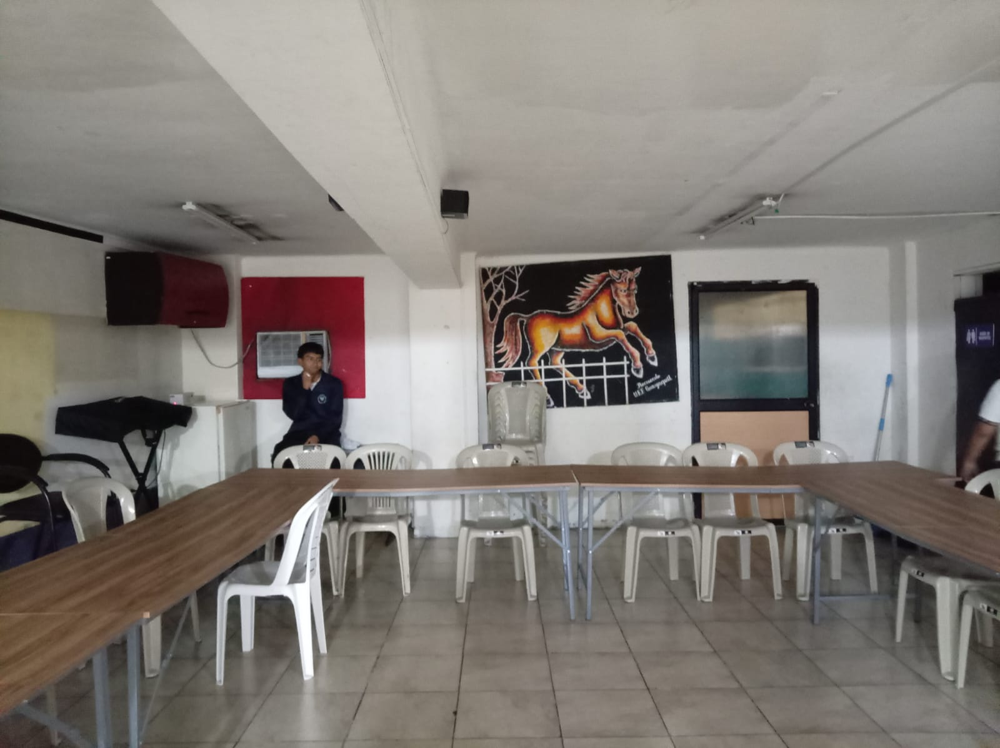
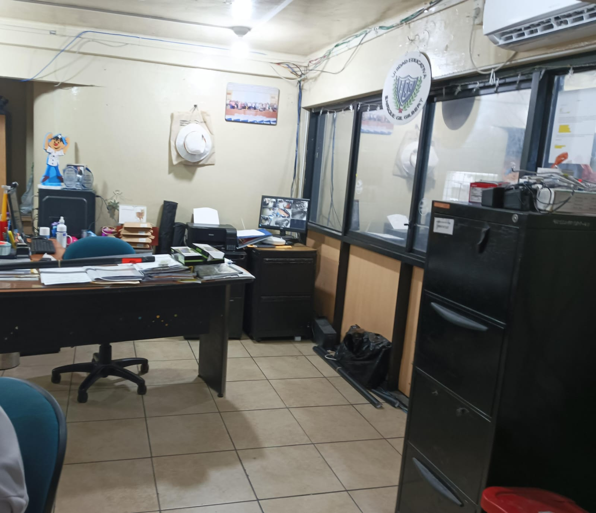
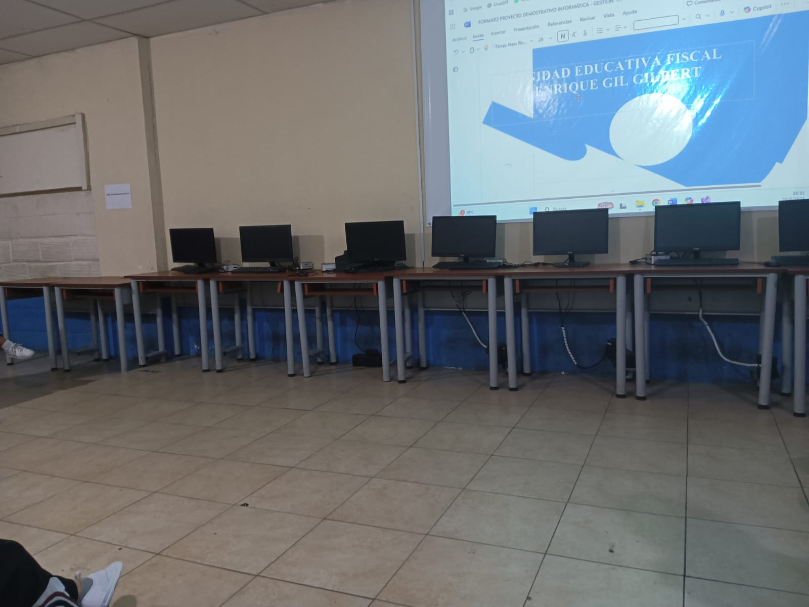
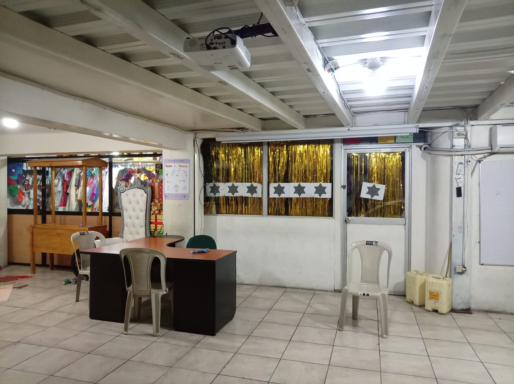
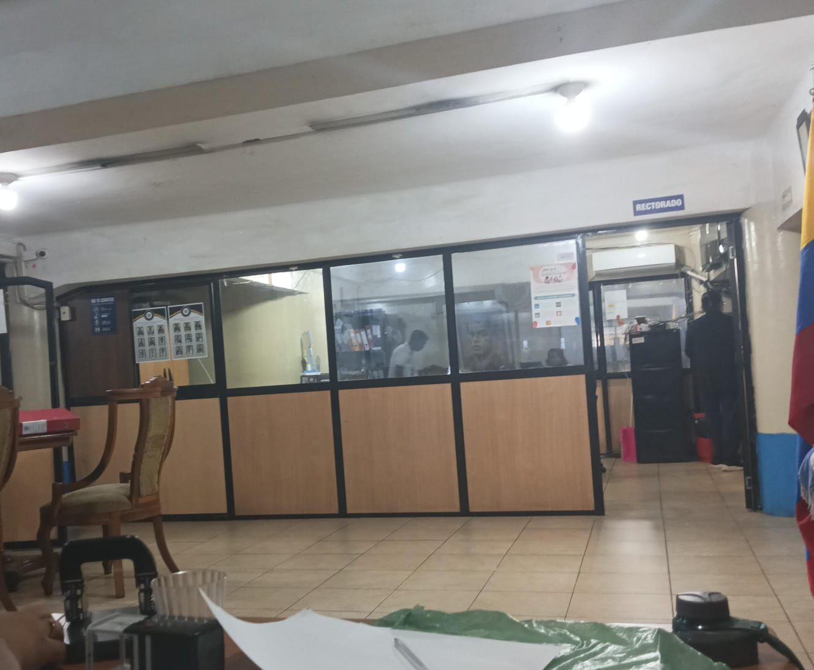

"ENRIQUE GIL GILBERTO"
El Colegio Enrique Gil Gilbert, ubicado en Guayaquil, fue fundado en 1976 con el objetivo de ofrecer educación en áreas como comercio, administración y contabilidad, expandiendo sus instalaciones y servicios para satisfacer las necesidades de sus estudiantes y profesores.





La misión del Colegio Enrique Gil Gilbert (actualmente Unidad Educativa Enrique Gil Gilbert) es ofrecer educación que permita a sus estudiantes lograr la meta de ser "bachiller de la República", con un enfoque particular en programas de comercio, administración y contabilidad desde su fundación en 1976. El colegio busca cumplir esta misión a pesar de las adversidades, adaptándose y mejorando sus instalaciones y servicios.
La visión del colegio Enrique Gil Gilbert, que aspira a ser un centro de excelencia educativa, se enfoca en formar estudiantes con una sólida formación académica y humana para enfrentar los retos del futuro, fomentando valores de responsabilidad, civismo y excelencia. Su meta es "ser bachiller de la República, un objetivo cumplido pese a las adversidades", buscando formar ciudadanos íntegros capaces de contribuir a la sociedad.
La especialización en Informática está orientada a brindar a los estudiantes conocimientos y habilidades necesarias para desenvolverse en el mundo tecnológico, que es fundamental en la sociedad actual. Esta especialización se imparte en el nivel de Bachillerato, con un enfoque tanto teórico como práctico.
Esta especialización está diseñada para proporcionar a los estudiantes las competencias necesarias en el ámbito contable, preparándolos para el mercado laboral o estudios superiores en áreas afines.
La gestión administrativa está diseñada para optimizar y coordinar los recursos (humanos, financieros y materiales) de una organización para lograr sus objetivos de manera eficiente y efectiva.